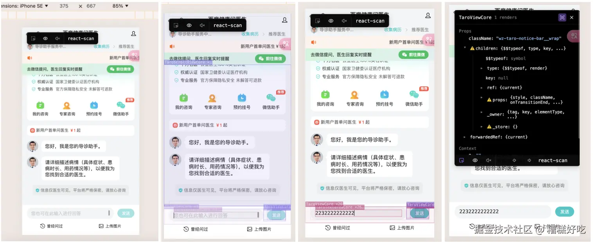

一. 背景
React 应用的性能优化一直是开发者关注的重点问题之一。在复杂的组件树和频繁的状态更新中，如何快速发现性能瓶颈并解决它，是提升用户体验的重要环节。React Scan 正是为此而生的一款工具，它以直观的方式帮助开发者检测和优化 React 应用的性能问题。
##二、为什么需要 React Scan
1. 调试性能问题的难度
React 应用的性能问题常常隐藏在复杂的组件树和频繁的状态更新中。例如，某些组件可能因为父组件的无关状态更新而被不必要地重新渲染，导致性能浪费。手动定位这些问题通常需要开发者深入理解代码结构，并花费大量时间分析。React Scan 能够自动检测多余的组件重渲染，并直观地标记问题区域，让开发者快速定位性能瓶颈。
2. 传统工具的不足
React DevTools 是 React 官方提供的调试工具，但其性能分析功能（如 Profiler）需要开发者对热图和性能数据有深入理解，分析门槛较高。而 React Scan 提供更直接的可视化反馈，例如在界面中高亮显示多余渲染的组件，帮助开发者在实际界面中直观地发现问题。
三. React Scan 的优点
高效检测多余渲染：
React Scan 能够自动分析组件的渲染行为，判断哪些渲染是必要的，哪些是多余的。它通过高亮显示和动画效果帮助开发者快速识别问题组件。
直观的可视化反馈：
工具通过在页面中直接标记问题组件，减少传统性能分析工具对数据解读的依赖，使性能问题一目了然。简单易用：
React Scan 提供多种集成方式，包括 CLI、浏览器扩展和代码 API，开发者可以根据需求选择适合的使用方式。
生产环境支持：
除了开发阶段，React Scan 还支持生产环境的性能监控，帮助开发者捕获真实用户场景中的性能瓶颈。

四. 如何使用 React Scan
React Scan 的使用非常简单，可以根据项目需求选择不同的集成方式。
4.1 Script 标签引入
在 HTML 文件中，可以直接通过 script 标签引入 react-scan：
<script src="https://unpkg.com/react-scan/dist/auto.global.js">
4.2 NPM 安装
对于使用模块化打包工具的项目，可以通过 npm 安装 React Scan：
npm install react-scan
安装完成后，在应用的入口文件（如 src/index.js）中引入并初始化 React Scan：
在项目入口进行配置：
import { scan } from "react-scan";
import React from "react";
if (typeof window !== "undefined") {
scan({
enabled: true,
log: true,
});
}
五. 项目实战
以问诊项目为例，直接在文件中配置通过 Script 标签傻瓜式引入
正常启动项目 h5：
yarn run dev:h5
启动完成后，即可看到效果：
可以直观的看出哪些组件会重渲染，和发生渲染的次数。在开发阶段可以通过高亮显示和动画效果帮助开发者快速识别问题组件。更好的做性能优化！
六. React Scan 与 React DevTools 对比
| 特性 | React Scan | React DevTools |
|---|---|---|
| 功能定位 | 专注性能优化，自动检测多余渲染 | 通用调试工具，功能覆盖更广 |
| 可视化反馈 | 高亮边框与动画，直观显示性能问题 | Profiler 提供性能热图和数据 |
| 适用场景 | 性能优化、快速定位问题 | 状态管理调试、功能分析 |
| 自动化程度 | 自动检测性能问题，简单易用 | 偏向手动操作，需要数据分析能力 |
| 扩展性与兼容性 | 支持 CLI、插件，兼容现代工具链 | 官方工具，与 React 完美兼容 |
React DevTools 是功能全面的调试工具，适合用于各种场景；而 React Scan 专注于性能问题检测和优化，两者在功能上互为补充。